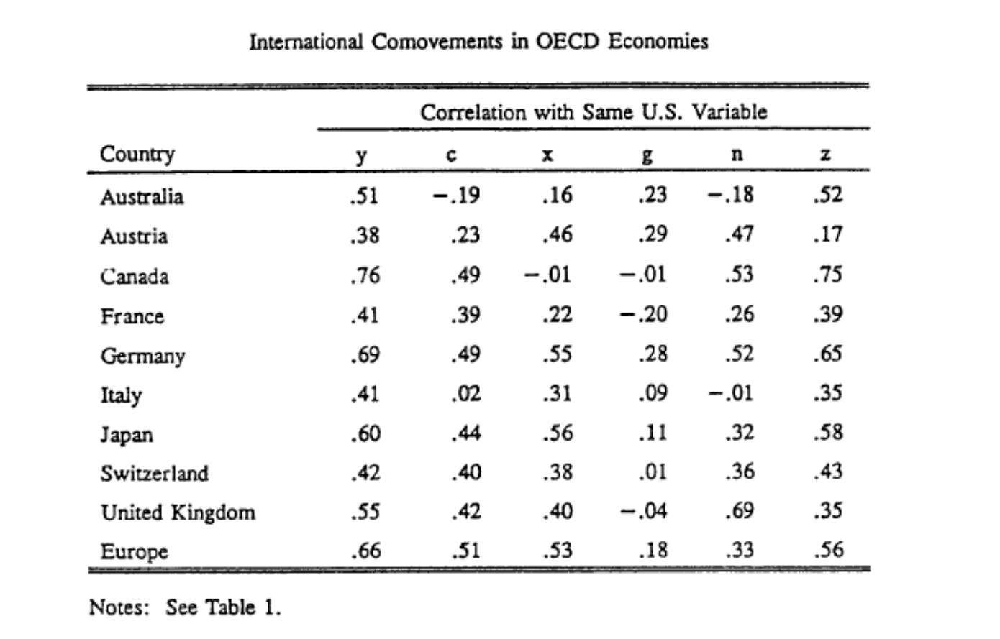
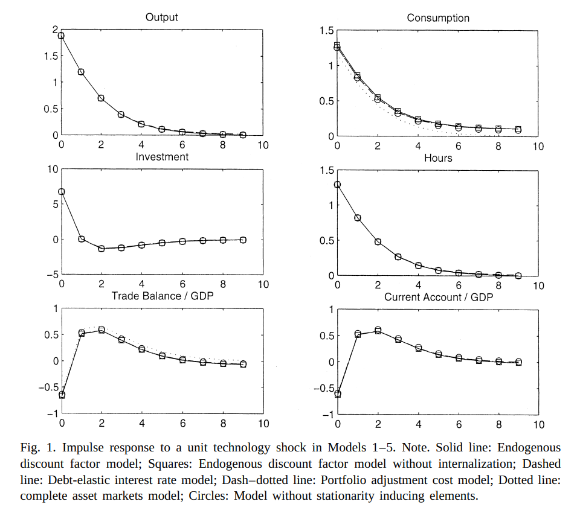

Small Open Economy Extension (IRBC)
Macro II - Fluctuations - ENSAE, 2024-2025
2025-03-19
Introduction and Basic Facts
Why a small open economy?
What are the classical reasons to open economy to trade?
- trade integration
- taste for variety
- comparative advantage
- financial integration
- smooth shock / insurance
From RBC to IRBC
RBC models have been very successful at matching Business Cycles
- (temporary) victory against keynesian view that short term fluctuations result from demand shocks
- so successful that facts at odd with theoretical predictions have been called “puzzles”
It didn’t take long before the same methodology was applied to International Business Cycles
Seminal Paper:
- International Real Business Cycles, Backus, Kehoe, Kydland (1992) (freshwater economists)
Very successful methodology:
- facts at odd with theoretical predictions have been called “puzzles”
IRBC Facts

Moments
From Kehoe,Kydland (1995)
IRBC Facts

Stylized Facts
Domestically:
- output more variable than consumption
- output autocorrelated
- productivity strongly procyclical
- trade balance strongly countercyclcal
- positive comovements in output
Internationally:
- smaller comovements in consumption
- Backus-Kehoe-Kydland puzzle
Can we replicate these moments with a BC model?
Modeling a Small Open Economy
Endowment model
Representative agents maximizes: \[\max_{c_t} \sum_{t=0}^{\infty} \beta^t u(c_t)\] \[c_t + a_{t} \leq y_t + (1+r) a_{t-1} \]
Endowment economy:
- income \((y_t)_t\) is exogenously given
- for simplicity we assume it is deterministic
Small open economy:
- open: can save \(a_t\) which yields \(a_{t+1}(1+r)\) in the next period
- small: country takes world interest rate \(r\) as given (no effect on world prices)
We solve this problem with the terminal conditions:
\(a_{-1}\) given1
\(\lim_{T\rightarrow\infty} \frac{a_{T}}{(1+r)^T}\geq0\)
- no-ponzi condition
The no-ponzi condition will in effect eliminate diverging solutions.
In a first order approximation, it selects the right eigenvalues.
Endowment model (3)
We get the lagrangian:
\[\mathcal{L}= \sum_{t=0}^{\infty} \beta^t u(c_t) + \sum_{t=0}^{\infty} \beta^t \lambda_t \left(y_t + (1+r) a_{t-1} - c_t-a_{t} \right)\]
First order conditions:
\[\begin{align} u^{\prime}(c_t)& =& \lambda_t \\ \lambda_t &=& \beta (1+r) \lambda_{t+1} \end{align}\]
Under the technical assumption \(\beta (1+r)=1\) we get \(c_t=c_{t+1}\) then
\[c_0 = \frac{r}{1+r}\left\{ (1+r) a_{-1} + \sum_{t=0}^{\infty} \frac{y_t}{(1+r)^t}\right\}\]
- consumption is determined by permanent income
- changes in initial wealth have permanent effects
- remark: problem isomorphic to consumption-savings decisions
Current Account
Reminders on Current Account
The trade balance is exports-imports (here \(y_t-c_t\))
The current account is trade balance + net factor payments (here \(y_t-c_t+r a_{t-1}\))
Positive current account: additional lending to the rest of the world.
Using the formula from before
\[CA_0 = a_{-1} r + (1-\frac{r}{1+r}) y_0 - \frac{r}{1+r}\left\{ \sum_{t\geq1}^{\infty} \frac{y_t}{(1+r)^t}\right\}\]
How does the current account reacts to income shocks?
current account responds positively to temporary shock in income
and to news about future income shocks:
- This is the intertemporal approach to the current account
Unit root
Still with the same formula: \[c_0 = \frac{r}{1+r}\left\{ (1+r) a_{-1} + \sum_{t=0}^{\infty} \frac{y_t}{(1+r)^t}\right\}\]
What is the effect of an increase in \(a_{-1}\)?
- consumption rises permanently
- $a_t$ is constant, equal to $a_{-1}$
- agent consumes small amount $r$ corresponding to interests paid forever on $a_{-1}$- this will correspond to a unit root in the solution
Adding capital
We add capital and production to our endowment economy: \[y_t = z_t k_{t-1}^\alpha\] \[k_t = (1-\delta) k_{t-1} + i_{t}\]
The aggregate resource constraint becomes:
\[a_{t} + c_t + i_t = (1+r) a_{t-1} + y_t\]
Now maximize \(\sum_t \beta^ t U(c_t)\)
We get first order conditions
\[\lambda_t = \beta \lambda_{t+1} (1+r)\] \[\lambda_t = \beta \lambda_{t+1}\left[ (1-\delta) + z_{t+1} f^{\prime}(k_{t}) \right]\]
where \(\lambda_t\) is lagrange multiplier associated to budget constraint.
Adding capital: optimality conditions
Since \(\lambda_t>0\) (constraint is always binding), we get:
\[(1-\delta) + z_{t+1} f^{\prime}(k_{t}) = 1+r\]
\[k_{t} = \left( \frac{r+\delta}{\alpha z_{t+1}}\right)^{\frac{1}{\alpha-1}}\]
and investment \[i_t = \left( \frac{r+\delta}{\alpha z_{t+1}}\right)^{\frac{1}{\alpha-1}}- (1-\delta)\left( \frac{r+\delta}{\alpha z_{t}}\right)^{\frac{1}{\alpha-1}}\]
Here investment is fully determined by productivity shocks
- too simple: no international dependence
Add friction to the investment
A possible solution: change the resource constraint such that adjusting capital is costly
For instance:
\[a_{t} + c_t + i_t + \frac{\omega}{2}\frac{(k_{t}-k_{t-1})^ 2}{k_t} = (1+r)a_{t-1} + z f(k_{t-1})\]
\[k_{t} = (1-\delta) k_{t-1} + i_t\]
where \(\omega\) is an adjustment friction.
Typically, \(\omega\) is chosen so that the model replicates \(\frac{Var(i_t)}{Var(y_t)}\) from the data.
üîú Cf tutorial.
A benchmark Small Open Economy Model
A benchmark Small Open Economy Model

Closing Small Economy Models, Schmitt Grohe and Uribe (2003), JIE
- small open economy model with production, consumption-leisure tradeoff and capital adjustment costs
- = RBC+open+adj costs
- perform some moments matching
- compare different ways of stationarizing
The model
\[\max_{c_t, n_t} \sum_{t=0}^{\infty} \beta^t u(c_t, n_t)\]
\[c_t + k_{t} + a_{t} = y_t + g_t - \frac{\omega}{2}(k_{t}-k_{t-1})^2 +(1-\delta) k_{t-1} + (1+r^{\star}+{\color{red}\pi(a_{t-1})})a_{t-1}\] \[y_t = f(k_{t-1}, n_t, z_t)\]
\[z_{t+1} = \rho z_t + \epsilon_{t+1}\]
and \[u(c, n) = \frac{1}{1-\sigma}\left(c^{\psi}(1-n)^{1-\psi} )\right)^{1-\sigma}\]
The term \(\color{red}\pi\) is there to make the model stationary.
How to make the distribution stationary?
The solution of the model exhibits a unit root:
\[a_t = a_{t-1} + ... \text{other variables in t-1} + \text{shocks in t}\]
Problem:
- there isn’t a unique deterministic steady-state
- the ergodic distribution of the model variables is not defined
This raises practical issues (notably for estimation) for the linear model.
- no unconditional moments
How to get rid of the unit root?
General idea:
- introduce a force that pulls the level of foreign assets towards equilibrium
Schmitt Grohe and Uribe (2003) consider many options:
- debt-elastic interest rate: \[1+r = 1+r^{\star} + \pi(a_d)\]
- with \(\pi(0)=0\) and \(\pi^{\prime}(0)>0\)
- \(\pi\) can be understood as a risk premium on rising debt
- endogenous time-discount (aka Usawa preferences) \[\beta(c_t) = (1+c_t)^{-\chi}\]
- costs of adjustment for international portfolios
SGU show that the choice of the stationarization device has little effect for the dynamics (moments) of most variables
Calibration
| Parameters | Values |
|---|---|
| \(σ\) | 2 |
| \(ψ\) | 1.45 |
| \(α\) | 0.32 |
| \(ω\) | 0.028 |
| \(r\) | 0.04 |
| Parameters | Values |
|---|---|
| \(δ\) | 0.1 |
| \(ρ\) | 0.42 |
| \(σ²\) | 0.0129 |
| \(A^{\star}\) | -0.7442 |
| \(χ\) | 0.000742 |
Results


Conclusions
- The model matches unconditional correlations fairly well
- The stationarization device has little effect on the moments
- Unconditional correlations are not that great
- a limitation of the moment matching method?
- Correlation of consumption with output is too high
- and probably cross-correlation of consumption too low
- still the Backus-Kehoe-Kydland puzzle…